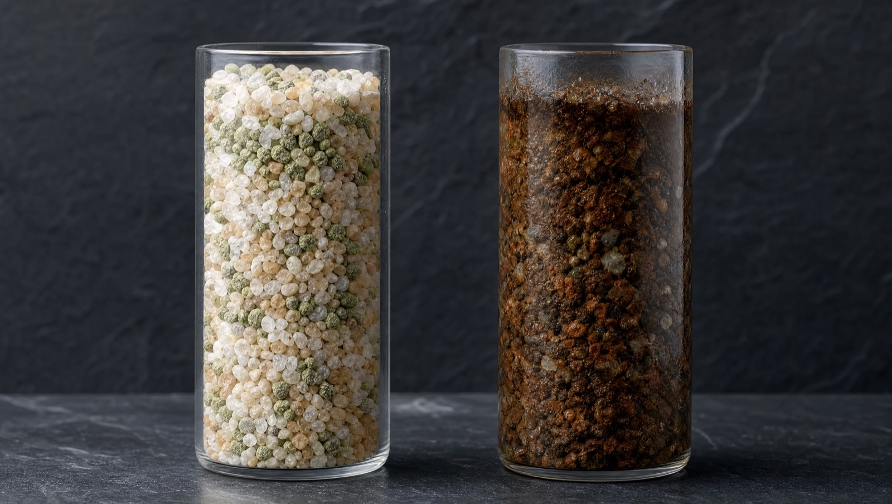

🚿
No banho
Água com menos sedimento na pele e no cabelo, todos os dias.
O American Filter trata toda a água que entra na sua casa. Resultado: água filtrada em todas as torneiras — banho, cozinha, escovar os dentes e até o pote do seu pet.

Da estação até a sua torneira, a água percorre um trajeto que ninguém te mostra. Aperte o play.
Canos antigos e enferrujados, com décadas de uso. No caminho, a água arrasta barro, areia, silte, lodo e ferrugem.
Onde os sedimentos decantam, a sujeira se acumula e a água espera até você abrir a torneira.
No banho. Na panela. Na escova de dente. Na água do seu pet.
Instalado logo no início da rede de água, junto ao hidrômetro. Toda gota que entra passa por ele antes de chegar a qualquer torneira. Não é um filtro de pia que protege um ponto só — é proteção para a casa inteira.
Água com menos sedimento na pele e no cabelo, todos os dias.

Cozinhe, lave e prepare alimentos com água filtrada de sedimentos.

Aquela água do dia a dia que você usa sem pensar — agora filtrada.

A água do bebedouro dele também passa pelo filtro.
Junto ao hidrômetro, na entrada de água do imóvel. Toda a água passa por ele antes de seguir para a casa.
Cristais de quartzo e zeólita vulcânica formam o leito filtrante que retém os sedimentos.
Barro, areia, silte, lodo e ferrugem ficam para trás — partículas invisíveis a olho nu.
Manual (F56) ou automática, com by-pass para manutenção sem cortar a água da casa.
Projetadas para não perder pressão. Você filtra sem sacrificar o jato do chuveiro.

Inox autêntico não atrai ímã. Encoste um: se não gruda, é 304. Se gruda, desconfie.
Certificação oficial. Não é promessa de marketing.
De garantia. Confiança de quem constrói para durar.
Décadas tratando água no Brasil. Experiência que não se improvisa — e suporte de verdade quando você precisa.

Quando abrimos um American Filter em manutenção, a mídia conta a história.
O coração do American Filter é a mídia de quartzo e zeólita vulcânica. O quartzo forma um leito denso que barra os sedimentos maiores; a zeólita, com sua estrutura porosa, age como uma esponja mineral que segura as partículas mais finas — barro, areia, silte, lodo e ferrugem de 5 a 15 µm. Juntos, filtram toda a água da casa sem perder pressão.
Pressão de trabalho: 1 a 3 kgf/cm². Não sabe qual escolher? Nossa equipe analisa seu consumo e indica o modelo ideal.
Proporções reais de diâmetro × altura por modelo. Baixar catálogo em PDF →
Casas e apartamentos com água filtrada de sedimentos em todos os pontos.

Proteção coletiva na entrada de água. Os modelos Pro dão conta de alta demanda.

Água filtrada para processos, equipamentos e operação.
Nossa equipe instala o American Filter no cavalete, junto ao hidrômetro, com tudo certo. Consulte os locais que atendemos com instalação.
Fora da área de instalação? Enviamos o seu American Filter para qualquer lugar do país, com toda a orientação para a instalação.
"Instalei o Home Filter 2500 em casa e a diferença no fundo da caixa d'água é visível. A água do banho parece outra."
"Coloquei o Pro Filter no condomínio depois de muita reclamação de água com resíduo. Resolveu. A pressão continuou a mesma."
"Fiz o teste do ímã que eles falaram e realmente não grudou. Inox de verdade. Já tem mais de um ano e zero problema."
Depoimentos ilustrativos. Peça referências reais de clientes da sua região pelo WhatsApp.
O filtro de entrada retém sedimentos como barro, areia e ferrugem logo na entrada de água da casa, antes da caixa d'água. Com ele, você tem água filtrada em todas as torneiras, no chuveiro e nos eletrodomésticos, com mais proteção contra resíduos na tubulação.
O American Filter é um filtro de entrada. Ele retém sedimentos como barro, areia, silte, lodo e ferrugem (5 a 15 µm) de toda a água do imóvel. Para água de beber, ele trabalha em conjunto com o seu purificador de pia, entregando uma água já filtrada de sedimentos.
O filtro de pia trata um ponto só. O American Filter trata a entrada de água e protege a casa inteira — banho, cozinha, todas as torneiras e eletrodomésticos.
Não, quando bem dimensionado. As crepinas são de alta vazão, projetadas justamente para manter a pressão. Trabalha entre 1 e 3 kgf/cm². Por isso escolhemos o modelo pela vazão da sua casa.
Faça o teste do ímã. Inox 304 não atrai ímã. No American Filter, o ímã não gruda — prova de que o corpo é inox autêntico, com banho de níquel.
Não. O American Filter é feito para quem recebe água tratada da concessionária. Mesmo tratada, a água arrasta sedimentos pelos canos e pela caixa d'água até chegar na torneira. Se a sua água vem de poço, fale com a gente — temos a linha indicada para esse caso.
São 10 anos de garantia e certificação pelo INMETRO. Você compra com a segurança de quase 40 anos da Tudo de Filtro.
Fale com um distribuidor autorizado, descubra o modelo ideal para o seu imóvel e receba seu orçamento sem compromisso.
Falar no WhatsApp: (12) 98285-5000Preço informado apenas por distribuidor autorizado.